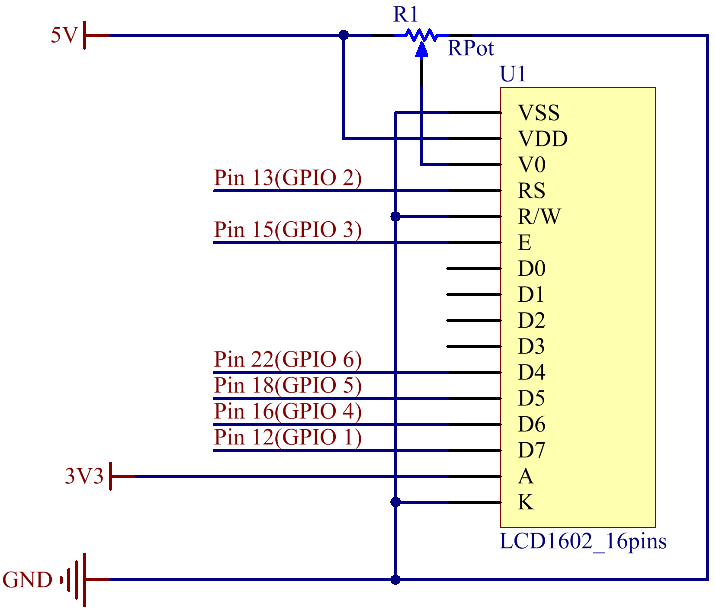
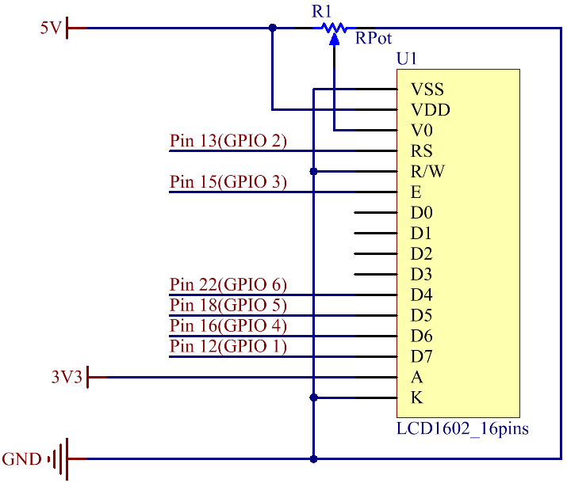

Lesson 17 LCD1602¶
Introduction¶
In this lesson, we will learn how to use an LCD1602 to display characters and strings. LCD1602, or 1602 character-type liquid crystal display, is a kind of dot matrix module to show letters, numbers, and characters and so on. It’s composed of 5x7 or 5x11 dot matrix positions; each position can display one character. Now let’s check more details!
{kind=link}
Principle¶
Generally, LCD1602 has parallel ports, that is, it would control several pins at the same time. LCD1602 can be categorized into eight-port and four-port connections. If the eight-port connection is used, then all the digital ports of the Raspberry Pi are almost completely occupied. If you want to connect more sensors, there will be no ports available. Therefore, the four-port connection is used here for better application.

Pins of LCD1602 and their Functions¶
VSS: connected to ground.
VDD: connected to a +5V power supply.
VO: to adjust the contrast.
RS: A register select pin that controls where in the LCD’s memory you are writing data to. You can select either the data register, which holds what goes on the screen, or an instruction register, which is where the LCD’s controller looks for instructions on what to do next.
R/W: A Read/Write pin to select between reading and writing mode.
E: An enabling pin that reads the information when High level (1) is received. The instructions are run when the signal changes from High level to Low level.
D0-D7: to read and write data.
A and K: Pins that control the LCD backlight. Connect K to GND and A to 3.3v. Open the backlight and you will see clear characters in a comparatively dark environment.
Schematic Diagram¶
Connect K to GND and A to 3.3 V, and then the backlight of the LCD1602 will be turned on. Connect VSS to GND and the LCD1602 to the power source. Connect VO to the middle pin of the potentiometer - with it you can adjust the contrast of the screen display. Connect RS to Pin 13 and R/W pin to GND. Connect E to Pin 15 and the characters displayed on the LCD1602 are controlled by D4-D7. For programming, it is optimized by calling function libraries.
 

{kind=link}
Build the Circuit¶
Note
Make sure the pins are connected correctly. Otherwise, characters will not be displayed properly. You may need to adjust the potentiometer till the LCD1602 can display clearly.

For C Language Users¶
Command¶
1. Go to the folder of the code.
cd /home/pi/electronic-kit/for-raspberry-pi/c/Lesson_17_LCD1602
2. Compile the code.
gcc 17_Lcd1602.c -lwiringPiDev -lwiringPi
Note
In order to use the LCD driver in the wiringPi devLib, you need to use -lwiringPiDev at compile time.
3. Run the executable file.
sudo ./a.out
You may see the “SunFounder” and “hello, world” appear one by one on the LCD.
Code¶
1.#include <stdio.h>
2.#include <stdlib.h>
3.#include <wiringPi.h>
4.#include <lcd.h>
5.
6.const unsigned char Buf[] = "---SUNFOUNDER---";
7.const unsigned char myBuf[] = " sunfounder.com";
8.
9.int main(void)
10.{
11. int fd;
12. int i;
13.
14. if(wiringPiSetup() == -1){
15. exit(1);
16. }
17.
18. fd = lcdInit(2,16,4,2,3, 0,0,0,0,6,5,4,1); //see /usr/local/include/lcd.h
19. printf("%d", fd);
20. if (fd == -1){
21. printf("lcdInit 1 failed\n") ;
22. return 1;
23. }
24.
25. delay(1000);
26. lcdClear(fd);
27. lcdPosition(fd, 0, 0);
28. lcdPuts(fd, "Welcome To--->");
29. lcdPosition(fd, 0, 1);
30. lcdPuts(fd, "sunfounder.com");
31. delay(1000);
32. lcdClear(fd);
33.
34. while(1){
35. lcdClear(fd);
36. for(i=0; i<16; i++){
37. lcdPosition(fd, i, 0);
38. lcdPutchar(fd, *(myBuf+i));
39. delay(100);
40. }
41. for(i=0;i<sizeof(Buf)-1;i++){
42. lcdPosition(fd, i, 1);
43. lcdPutchar(fd, *(Buf+i));
44. delay(200);
45. }
46. delay(500);
47. }
48. return 0;
49.}
Code Explanation¶
4. #include <lcd.h>
This is a library that integrates lcd1602 functional functions, in which functions are defined such as lcdClear(), lcdPosition(), lcdPuts(), and so on. These functions can be called directly after importing into the library.
18. fd = lcdInit(2,16,4,2,3, 0,0,0,0,6,5,4,1); //see /usr/local/include/lcd.h
19. printf("%d", fd);
20. if (fd == -1){
21. printf("lcdInit 1 failed\n") ;
22. return 1;
Initialize the lcd1602. The prototype of lcdInit() is as follows:
int lcdInit (int rows, int cols, int bits, int rs, int strb, int d0, int d1, int d2, int d3, int d4, int d5, int d6, int d7) ;
This is the main initialisation function and must be called before you use any other LCD functions. Rows and cols are the rows and columns on the display (e.g. 2, 16 or 4,20). Bits is the number of bits wide on the interface (4 or 8). The rs and strb represent the pin numbers of the display RS pin and Strobe (E) pin. The parameters d0 through d7 are the pin numbers of the 8 data pins connected from the Pi to the display. Only the first 4 are used if you are running the display in 4-bit mode.
The return value is the ‘handle’ to be used for all subsequent calls to the lcd library when dealing with that LCD, or -1 to indicate a fault. (Usually incorrect parameters)
26. lcdClear(fd);
This function is used to clear the lcd screen. After calling this function, all information displayed on the screen will be cleared.
27. lcdPosition(fd, 0, 0);
Set the position of the cursor at row 0 and col 0 (in fact it’s the first line and first column) for subsequent text entry.
The prototype of lcdpostion function is as follows: lcdPosition (int handle, int x, int y) ;
Set the position of the cursor for subsequent text entry. x is the column and 0 is the left-most edge. y is the line and 0 is the top line.
28. lcdPuts(fd, "Welcome To--->");
Display “Welcome To—>” at the specified location of LCD1602.
36. for(i=0; i<16; i++){
37. lcdPosition(fd, i, 0);
38. lcdPutchar(fd, *(myBuf+i));
39. delay(100);
40. }
Use the lcdPosition() function to place the cursor at col i and row 0(the top line ) for subsequent text entry. Then the characters in the array myBuf [] are displayed one by one to the LCD1602.
*is the address of myBuf, the real address of characters stored in memory. After calling lcdPutchar(fd, *(myBuf+ I)), the program will find the real address of the character, read the information stored in the address, and display it on the LCD screen.
For Python Language Users¶
Command¶
1. Go to the folder of the code.
cd /home/pi/electronic-kit/for-raspberry-pi/python
2. Run the code.
sudo python3 17_Lcd1602.py
You may see the “SunFounder” and “hello, world” appear one by one on the LCD.
Code¶
1.from time import sleep
2.
3.def main():
4. global lcd
5. lcd = LCD()
6. line0 = " sunfounder.com"
7. line1 = "---SUNFOUNDER---"
8.
9. lcd.clear()
10. lcd.message("Welcome to --->\n sunfounder.com")
11. sleep(3)
12.
13. while True:
14. lcd.begin(0, 2)
15. lcd.clear()
16. for i in range(0, len(line0)):
17. lcd.setCursor(i, 0)
18. lcd.message(line0[i])
19. sleep(0.1)
20. for i in range(0, len(line1)):
21. lcd.setCursor(i, 1)
22. lcd.message(line1[i])
23. sleep(0.1)
24. sleep(1)
25.
26.if __name__ == '__main__':
27. try:
28. main()
29. except KeyboardInterrupt:
30. lcd.clear()
lcd.destroy()
Note
Because the source code contains so many definitions, we only list few code here. Please download the complete code from the address marked in the document.
Code Explanation¶
6. line0 = " sunfounder.com"
7. line1 = "---SUNFOUNDER---"
Define 2 lines of characters that will be displayed on the LCD 1602.
10. lcd.message("Welcome to --->\n sunfounder.com")
On LCD1602, “Welcome to —>n sunfounder.com” pops up.
15. lcd.begin(0, 2)
Initializes the LCD screen and specifies the dimensions (width and height) of the display. begin() function needs to be called before any other LCD library commands.
16. lcd.clear()
This function is used to clear the lcd screen. After calling this function, all information displayed on the screen will be cleared.
18. lcd.setCursor(i, 0)
Set the position of the cursor at col i and row 0 (the first line) for subsequent text entry.
19. lcd.message(line0[i])
The characters in the array line0[] will be displayed at the specified location one by one.
Phenomenon Picture¶